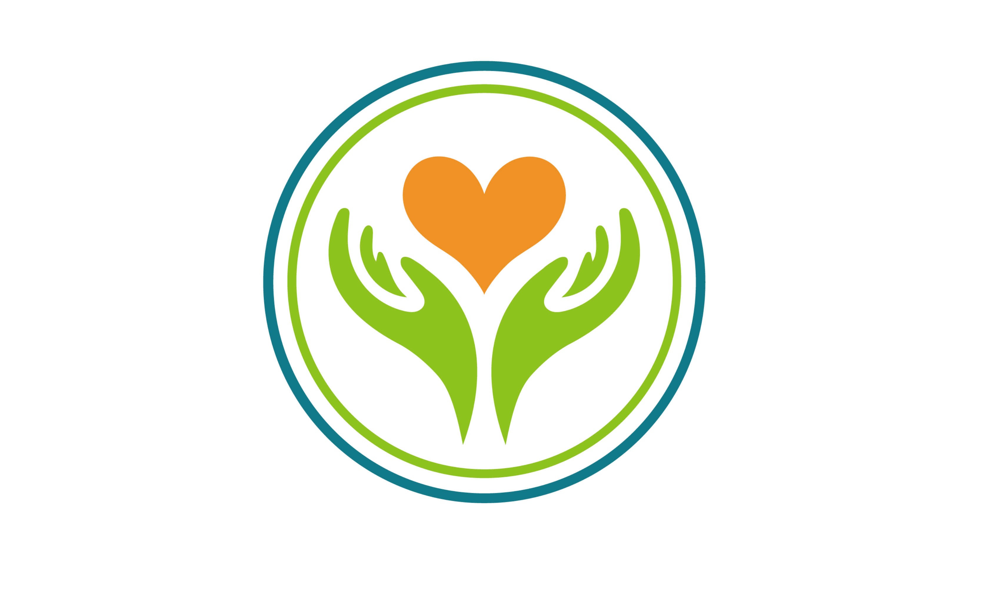
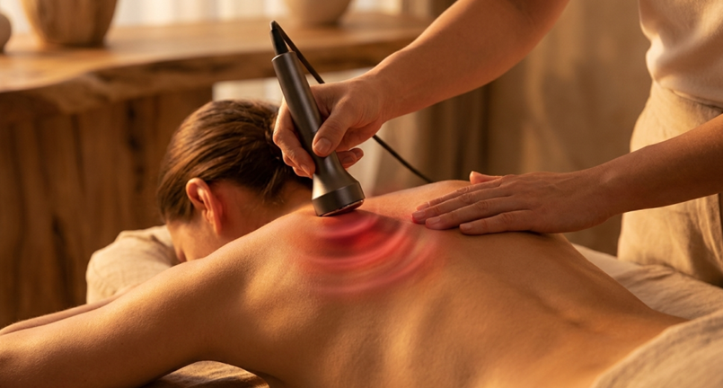
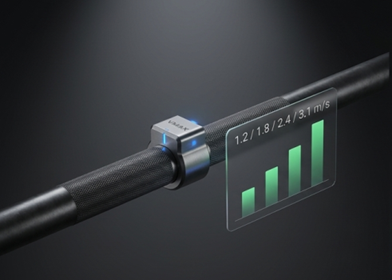
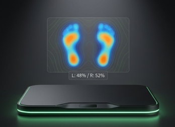
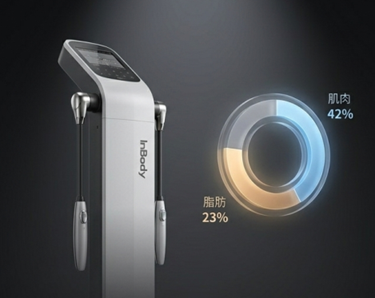
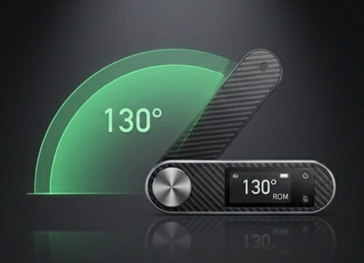
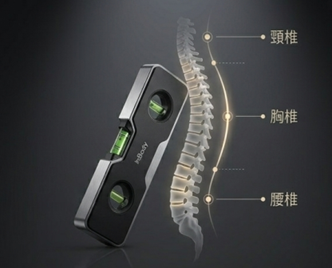
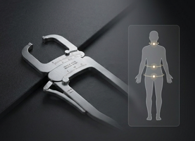

精密檢測 × 科學修復 × 客製訓練

你是不是也這樣——
脖子痠了去按摩，舒服了兩天，下週又回來。
健身練了半年，體態沒什麼變化，反而腰開始痛。
壓力大、睡不好，試過冥想 App、試過泡澡，還是感覺腦袋停不下來。
受傷康復了三個月，沒有人告訴你「你現在準備好了，可以回去運動了」。
這不是你不夠努力。是你一直在處理症狀的位置，而不是問題的根源。
「我自己從 120 公斤降到 75 公斤，中間走了很多彎路。後來還經歷了前十字韌帶手術，才真正理解：身體的問題需要系統，不需要碰運氣。」
— James，宥芯創辦人 / 運動傷害防護員 / 臺師大運動科學碩士
選擇下方的標籤，找到最像你的狀態，看清楚你的修復路徑。
不到 2 分鐘，5 個問題，告訴你最適合從哪裡開始。測完還會幫你產出個人化建議。
對應你的需求，只選優先度最高的 1 個服務。不要同時嘗試所有服務——有感受，才叫真正開始。
4–6 週後做一次回測，雷達圖比對進步。看到數字在動，你就會知道下一步要走哪裡。
6 個維度 × 6 道問題 → 產出你的個人雷達圖
5 個問題 × 不到 2 分鐘 → 個人化服務建議
不知道問題在哪？先讓數據告訴你。
技術先到位，再把力量與速度堆上去。
不只是康復，而是有數據支撐的回場計畫。
先找根源，再深層化解，最後整合回動作。
聲波共振讓神經系統從戰鬥模式切換到恢復模式。
每一個評估與訓練，都有儀器數據在背後支撐——不是憑感覺，是數字說話。






不要同時嘗試所有服務。
一個服務做到你的身體有真實改變——恢復速度、睡眠品質、關節活動度——再說下一個。
選一個，做到有感，再說下一個。
留下你的 Gmail，James 會在 24 小時內寄出針對你身體狀況的個人化建議，以及宥芯最新課程資訊。
填寫後 James 會親自回覆，不會有自動發送的廣告郵件。
立即預約健康檢測，讓數據幫你找到身體問題的真正起點。